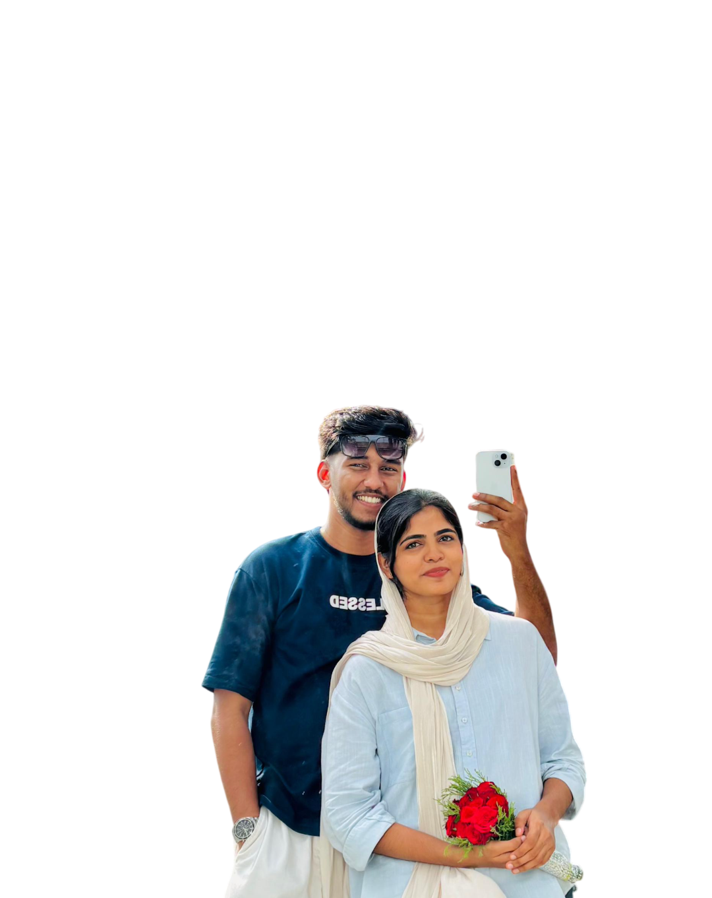

000
DAYS
:
000
HOURS
:
000
MINUTES
:
000
SECONDS

Happy Birthday, my kanmaniiiii. Today isn't just another date on the calendar. It's the day the most beautiful person I know came into this world, and I can't help but feel grateful because, twenty-five years later, life somehow led you to me.
If someone asked me why I love you, I don't think I could ever answer it in a single sentence. My love for you wasn't created in one magical moment. It was built through conversations, through waiting, through prayers, through laughter, and through every little step that slowly brought our hearts together. When we first crossed paths through matrimony, you were simply another profile, another name among many. I had no idea that the girl on the other side of that screen would become the greatest blessing of my life. What started as casual conversations slowly became the best part of my day. Before I even realized it, I found myself waiting for your messages, smiling at your calls, and feeling a sense of happiness that only you could bring. Without even noticing, you stopped being someone I talked to and became someone I couldn't imagine my life without.
I still remember the first time we met. I was nervous, wondering how everything would go. But the moment we started talking, all that nervousness disappeared. There was no pressure, no pretending, no awkwardness. Being with you simply felt... right. It felt familiar, as though my heart had already chosen you long before my mind understood what was happening. The more I got to know you, the more I admired the incredible person you are. It wasn't just your beautiful smile that made me fall in love. It was your kindness, your patience, your caring heart, the way you listen, the respect you show everyone around you, and the warmth you carry wherever you go.
You have this beautiful way of making everything feel lighter. On difficult days, you bring me peace. On ordinary days, you make life feel extraordinary. For twenty-five years of my life, I never truly understood what people meant when they spoke about finding "the one." I thought love was supposed to be butterflies, excitement, and grand gestures. Then I met you. You showed me that real love is much quieter. It's comfort. It's peace. It's feeling safe enough to be completely yourself.
You never asked me to become someone else, yet every single day you inspire me to become a better man. You make me dream about our future together - the home we'll build, the little traditions we'll create, the celebrations we'll share, the challenges we'll overcome hand in hand, and the countless birthdays I'll be lucky enough to celebrate beside you.I cannot wait for the day I get to call you my wife. You have become my safest place, my biggest blessing, and the home my heart never knew it was searching for.
If there's one thing I'm absolutely certain of, it's this: Loving you is the easiest and the best decision my heart has ever made. And if I had to live these twenty-five years all over again just to find you on that one day, I would choose every single step exactly the same. Because every road I walked before you only makes sense now that it led me to you.
Thank you for being exactly who you are. Thank you for loving me. Thank you for making my world brighter simply by being in it.
On your birthday, my only wish is that life gives you endless reasons to smile, because your smile has become one of my favourite things in this world. I promise to spend my life protecting that smile, standing beside you through every season, celebrating your happiest moments, holding your hand through the difficult ones, and reminding you every single day how deeply you are loved.
Happy Birthday, my beautiful chakkara ponnee. May this be the last birthday we celebrate before beginning the greatest chapter of our lives together. I love you more than words will ever be able to express.
Forever Yours,
Yasin ❤️